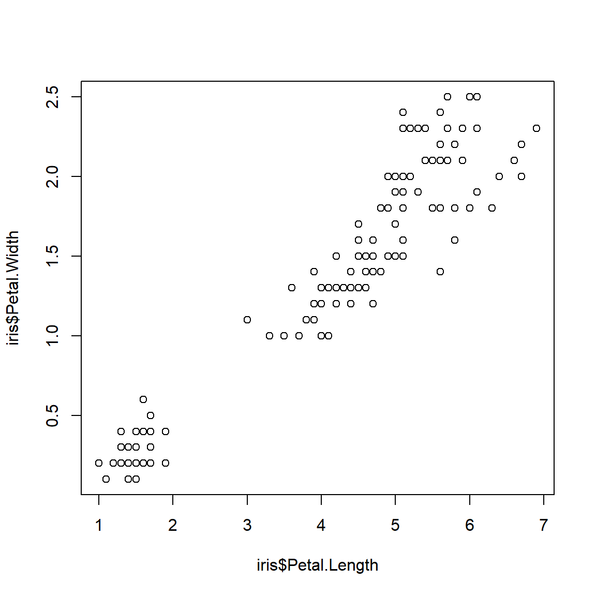

Code
## add name to the figure
head(iris)Table 1:
The column names areSepal.Length, Sepal.Width, Petal.Length, Petal.Width, Species
The aim of what I do is to provide some convenience function regarding calculating running time, memory usage and treating error for my other packages(MUVR,TriplotGUI)
MUVR::MUVR(): Perform variable selection and prediction in repeated nested cross-validation
TriplotGUI::TriplotGUIshiny(): The function that Open my shiny app that do some stuff(doesn’t matter here)
This is italic text
This is bold text
H2O
210
210
\(2^{10}\)
\(2_{10}\)
\(\sum\limits_{n=1}^{10} \frac{3}{2}\cdot n\)
This is a block quote. This paragraph has two linessssssssssssssssssssssssssssssssssssssssssssssssssssssssssssssssssssssssssssssssssssssssssssssssssssssssssssssss.
- This is a list inside a block quote.

- Second item. this
Let’s explore the iris dataset.
<!--Text block code--> This is generic block code.
## add name to the figure
head(iris)The column names areSepal.Length, Sepal.Width, Petal.Length, Petal.Width, Species
## echo display the chunk
## eval truth is default whne false, not run the code
ggplot(dfr4,aes(x=Month,y=fraction,colour=Year,group=Year))+
geom_point(size=2)+
geom_line()+
labs(x="Month",y="Fraction of support issues")+
scale_colour_manual(values=c("#000000","#E69F00","#56B4E9",
"#009E73","#F0E442","#006699","#D55E00","#CC79A7"))+
theme_bw(base_size=12,base_family="Gidole")+
theme(panel.border=element_blank(),
panel.grid.minor=element_blank(),
panel.grid.major.x=element_blank(),
axis.ticks=element_blank())## fig-cap is to add name to the figure
plot(x=iris$Petal.Length,y=iris$Petal.Width)
quarto::quarto_render("quarto_try.qmd")
quarto::quarto_render("quarto_try.qmd")If change to pdf
format: pdf
pdf-engine: pdflatex